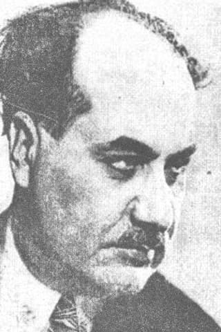
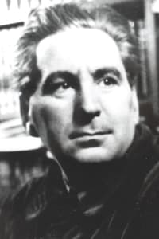
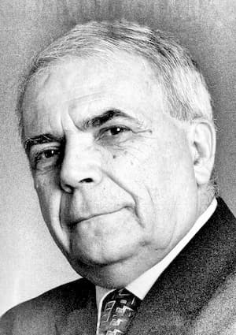

Dușmanii lui Nichifor Crainic, dându-și seama că nu îl pot îngropa în negura istoriei pentru a feri generațiile următoare care trebuiau reeducate în spirit comunist, au căutat diverse metode, cele mai folosite fiind diminuarea duhului ortodox și naționalist al operelor sale și susținerea de către „critici” a apartenenței sale la ideea marxist-comunistă, pentru a-i distorsiona personalitatea. În perioada dictaturii regale (1938-1939) a lui Carol al II-lea și a dictaturii militare a mareșalului Antonescu (1941-1944), diversele reeditări după volumele de poezie sau eseuri au fost cenzurate din „nevoia” de a fi „politically correct”. După perioada de detenție (1947-1962), Crainic a fost angajat în acte la ziarul Glasul patriei, organ propagandistic comunist care urmărea influențarea românilor din exil. Acolo o echipă de membri de partid scriau articole elogioase la adresa regimului și le publicau sub pseudonimul… Nichifor Crainic. În 1972 s-a creeat o antologie sub coordonarea lui Dumitru Micu, denumită Gândirea și gândirismul, în care viziunea poetică originală a lui Crainic și tuturor gândiriștilor este distorsionată. După 1990, un anume Nedic Lemnaru, despre care se spune că a fost securistul personal al lui Nichifor Crainic, îi publică „țintei” sale două volume de poezii cenzurate și distorsionate (apărute la editura Roza vânturilor). El merge chiar și mai departe, publicând prima parte a memoriilor lui Crainic în volumul Zile albe, zile negre. Despre memoriile lui Crainic, se știe că au fost modificate de Securitate cu scopul de a-l prezenta publicului pe autor ca un dușman înrăit al fraților de luptă. Nu mai spunem de cenzurarea operei Puncte cardinale în haos, apărută în 1996 la editura Timpul în Iași, din care lipsesc cinci eseuri de bază din prima ediție. Dar cel mai mare impact, pe lângă memoriile distorsionate și operele cenzurate, l-au avut cele două istorii (oficiale) ale literaturii române: după Călinescu și după Manolescu.
Cam acum un an și ceva, auzind numai laude la adresa autorului, am vrut să îmi cumpăr Istoria literaturii române de la origini până în prezent a criticului literar George Călinescu (1899-1965). La momentul respectiv, tata m-a oprit și mi-a spus că este „o mare porcărie” și că „nu merită”. Peste puțin timp, aveam să îmi dau seama de ce, începând să citesc cartea la sala de lectură a bibliotecii. După o parcurgere atentă, mi-am dat seama că ascultarea de părinți e sfântă și că tata avea, ca tot timpul, dreptate. Voi explica și de ce:
George Călinescu știa să aplice cu succes metoda istoricului evreu comunist Roller, bazată pe citate trunchiate, lipsite de context, uneori modificate în favoarea sa, pe omisiuni totale, pe afirmații fără o argumentare solidă, făcută „din mers”, prin care să poată păcăli cititorul neavizat sau cititorul uimit de limbajul întortochiat și care nu transmite nimic clar.
Folosind aceste metode perfide, toți membrii curentului gândirist și în general toți scriitorii noștri naționaliști sunt acum reorientați de către Călinescu. Dacă ei au avut o trăire românească și ortodoxă puternică, pe care au afirmat-o continuu prin opera lor, de ce George Călinescu răstălmăcește sensul și scopul operelor marilor noștri scriitor naționaliști? Pentru că altfel nu mai trăia și nu mai avea pâinea asigurată de Partid, după 1944 devenind un colaborator devotat al comuniștilor, în totală contradicție cu oamenii pe care în Istoria Literaturii Române îi compromite prin crase minciuni, oameni precum Crainic, Radu Gyr, Vasile Voiculescu, Mircea Vulcănescu și alții care au preferat temnița comunistă și moartea în schimbul trădării de Biserică și Neam pentru o viață mai „bună”.
Astfel, Aron Cotruș care a excelat prin atașamentul său extraordinar față de cauza națională a românismului și prin lupta împotriva politicii periculoase a expansiunii spiritului european, este pus laolaltă cu Eugen Lovinescu, care a fost aspru criticat de contemporanii săi pentru atitudinea sa exclusivist europeană, acesta crezând că doar o cultură ne-românească poate să ne asigure trăinicia. Ei, domnule Lovinescu, dacă ai vedea ce au făcut comuniștii și ce fac acuma europenii din noi, ți-ai retrage cuvintele!1
Marelui Simion Mehedinți, directorul Convorbirilor literare între 1907 și 1923, „vinovat” de crearea unor scriitori mult peste talia istoricului nostru literar și de deschiderea unui drum autohton în critica literară, de care Călinescu este străin, abia i se acordă jumătate de pagină2, pe când Eugen Lovinescu are zece pagini! Simion Mehedinți, marele savant care a fost fugărit de comuniști toată viața acum este fugărit și din Istoria literaturii după tovarășul Călinescu.
Ion Barbu și Dan Botta sunt încadrați (foarte prost) în dadaism și avangardism, lături de pro-europenii, anti-naționaliștii și anti-ortodocșii Tristan Tzara și Victor Brauner (evrei) care au fost mentorii Dadaismului și Avangardismului în România, curente apărute din gândirea „iluminată” a revoluției Franceze de la 1789, eveniment de la care a început descompunerea organică a societății prin promovarea unei politici anti-populare, bazate pe anti-tradiționalism și ateism militant.3
În tradiționalism, anti-comunistul și ortodoxul mărturisitor Radu Gyr, care în timpul regimului comunist se bucura de… închisoare, este pus la un loc cu scriitorul pro-comunist Zaharia Stancu, ale cărui cărți erau traduse și editate în tot spațiul de influență sovietic și se bucura de o apreciere extraordinară din partea Partidului Comunist.4
Pentru autorul Istoriei Literaturii Române, Nae Ionescu, teoreticianul trăirismului și primul filozof modern ortodox, este sofist (deși anti-sofist – n.n.), balcanic și violent, Mircea Eliade obsedat sexual, Emil Cioran un tânăr exaltat și simpatic naționalist, iar Dragoș Protopopescu este fără cultură.5
De Mircea Vulcănescu sau de celebra grupare Iconar, de origine bucovinească, care gravita în jurul lui Mircea Streinu și a lui Gheorghe Racoveanu, de Haig Acterian (primul shakespearolog român), de criticul Ovid Caledoniu, de Radu Dragnea, Ion Şiugariu sau Ion Chinezu, vedem că dl. Călinescu nici nu a auzit, deși erau cu toții cei mai respectați oameni ai literaturii române interbelice, pe când George Călinescu era un neica-nimeni, nerecunoscut de contemporanii săi, care după ce i-a văzut cenzurați de regimul antonescian sau întemnițați de comuniști, și-a permis să arunce în ei cu veninul urii și al invidiei sale viscerale, răzbunându-se astfel pe cei care nu i-au ridicat în slăvi inepțiile literare.
Pe ce criterii științifice se bazează această categorisire anapoda? Niciunul, înafară de criteriul specific comunist al compromiterii unui om prin reducerea lui de pe poziția de luptător anti-comunist în promotor al comunismului. Unde nu a funcționat reeducarea și sucirea minții, a mers reeducarea poporului prin cărți mincinoase și metode rolleriene.
O mare parte a invidiei se datorează mai ales nerecunoașterii de către societatea românească a studiului său, Opera lui Mihai Eminescu, apărută în mai multe volume începând cu 1934, fiind mult depășită de munca titanică a redacției junimiste a revistei Convorbiri literare, care în perioada 1939-1944 cât a fost sub conducerea criticului Ilie Torouțiu, și-a închinat toată activitatea descoperirii adevăratului geniu eminescian. Probabil că pe Călinescu l-a deranjat adevărul despre Eminescu: că era ortodox în credință, naționalist în trăire și politică, îndrăgostit în plan sentimental, istoric, economist și filosof în preocupare și un adevărat publicist român. Călinescu a creat un Eminescu monstruos, pantheist și păgân, cu influențe hinduse, în căutare de împlinire sexuală, european în orientare politică și devotat în filosofie lui Kant și Shopenhauer.
Concepția lui despre Eminescu și contemporani, precum Nichifor Crainic și toți cei amintiți mai sus, o regăsim la criticul literar de origine evreiască Constantin Dobrogeanu-Gherea (pe numele real, Nuhăm Solomon Katz), care a activat în România ca agent comunist, trimis de la Moscova, pentru a propaga ideile lui Marx și Engels în România. Mentorului său comunist, Călinescu îi dedică patru pagini în care se bucură de cum profesorul său îl compromite în stil drăcesc pe Eminescu, negând orice sensibilitate.6
Mai trebuie să adugăm că agentul sovietic și criticul Zigu Ornea (1930-2001, pe numele real Orenstein) s-a implicat intens în reeditarea Istoriei Literaturii Române a confratelui comunist George Călinescu, pentru a falsifica după modelul lui Roller, cât se poate de bine istoria adevărată a literaturii române.
Vom continua printr-o serie de acuze ale „marelui” George Călinescu7, la care vom răspunde curajoși, trecând peste stângăcia tinereții noastre:
Călinescu: „Deși Nichifor Crainic vorbește de revelație, de universalitatea bisericii și de alte astfel de puncte ale corectei ortodoxii, antiraționalismul său (prin care se opune tradiționaliștilor francezi thomiști) duce la un panteism de formă germanică, străin de esența ortodoxiei”.
Noi: Cu alte cuvinte, G. Călinescu ar vrea să spună despre Credința Ortodoxă că dacă aceasta nu ar fi raționalistă, adică nu ar trece totul prin filtrul uman și defect, și nu L-ar elimina pe Dumnezeu, ar ajunge la un pantheism naturalist (politeism) de tip german. Deci „teologul” Călinescu face ecuația Ortodoxie + Dumnezeu = pantheism. Adică în viziunea acestui „strălucit”, noi, ortodocșii, ne închinăm la iarbă și ciuperci. Călinescu militează practic pentru scoaterea lui Dumnezeu din credința noastră, adică pentru instituirea ateismului.
Călinescu: Crainic spunea: „Doctrina spiritualistă cuprinzând în amploarea ei fără egal cele două elemente ale vieții, ținând seamă prin urmare de cele două naturi ale aceleiași realități, e doctrina naționalismului creștin.”
Noi: Cele două naturi sunt reprezentate de duh și materie, doctrina spiritualistă a lui Crainic rezumându-se în citatul „pământ național, cer comun”, oferind Europei o invitație de întoarcere la Ortodoxie, militând pentru păstrarea specificului național, care este emanație a spiritului, transpusă parțial în materie prin cultură, și adoptarea unui cer comum, metafizic, care să fie Biserica Ortodoxă, în care fiecare neam își păstrează caracterul național. Călinescu din „apărător” al dreptei-credințe, începe acum cu amenințări:
Călinescu: „Dacă însă biserica tolerează franciscanismele și ideea comună că natura e imaginea divinității, oficial pentru motive temeinice ea socotește natura numai ca un efect al păcatului și ca un loc de ispășire, căreia nu se cade să i se dea nicidecum valoarea unei desfășurări continui a spiritului.”
Noi: Natura este creația lui Dumnezeu. Pământul, Soarele, Luna, stelele, apa, plantele și animalele au fost creeate toate înaintea căderii omului în păcat. Nu înțelegem de ce Călinescu vede natura ca efect al păcatului. Să fie el, oare, ereziarhul, creatorul unei religii ecologist-comuniste?
Călinescu: „Eroarea panteistă a lui Valentin și a tuturor emanatiștilor a fost combătută aprig de părinții bisericii. Acest raport dovedește că Nicifor Crainic nu se împiedică în minuții teologice și trece repede la construcția sistemului său care e în fond o politică.”
Noi: Despre „panteismul” lui Crainic, părintele Dumitru Stăniloaie afirmă: „vede în aceasta pe Dumnezeu ca un fel de ultimă esență a tuturor. Dar din caracterul personal în care prezintă pe Dumnezeu în mod explicit ca persoană, se poate vedea că esența de care afirmă el că este fundamentul tuturor, este energia necreată a lui Dumnezeu, în care e prezent El însuși ca Persoană, după învățătura ortodoxă. Grație acestei învățături, Dumnezeu e prezent în toate, fără să se confunde cu ele.” Ați înțeles domnule Călinescu?
Călinescu: „În tendința de a fixa adversari, gânditorul decretează marxismul ca un izvor de „ură titanică împotriva creștinismului”. Judecând faptele foarte senin, constatarea nu se verifică. Marxismul, ca și toate doctrinele de mentalitate evreiască, în unanimitate universaliste, păcătuiesc printr-o exagerare a ideilor de caritate și de umanitate pe deasupra instituțiilor statale.”
Noi: Constatăm cu stupoare că dl. George Călinescu nu a citit Manifestul Partidului Comunist, în care Karl Marx și Frederich Engels vorbesc cu o ură satanică împotriva creștinismului, declarându-i război de moarte. Dacă Marxismul care caracter caritabil și umanitar, cum se explică faptul că a omorât prin instituțiile sale statale 350 de milioane de oameni, din care 300.000 de tineri în închisorile comuniste din România, 1,2 milioane în deportarea populației românești din Basarabia și alte sute de mii în războiul URSS împotriva României, plus cele două milioane de arestări din România în perioada 1944-1989?
Călinescu: „Marxismul înțelege să refacă comunitatea primitivă creștină până la anularea firescului egoism individual și național și să aplice în primul rând principiul milei și al păcii până la abandonarea orcărei rezistențe.”
Noi: Marxismul, autodeclarat dușmanul de moarte al creștinismului, de fapt înțelege să distrugă comunitatea creștină și să își impună filosofia antropocentristă și egocentristă de natură atee și materialistă. Dar pentru George Călinescu, comunismul este capabil de milă și pace smerită. Revenim: de ce este atunci, comunismul, cel mai ucigaș sistem politic din istoria omenirii?
Călinescu: Evreul în genere face apel la unitatea creștinilor, punându-le în vedere universalitatea religiei, e un semn că între doctrinele marxiste și creștinism nu e prea mare distanță.
Noi: Nu înțelegem cum iudaismul, care este o religie naționalistă, în care pot crede doar evreii, poate da universalitate Creștinismului. Nu înțelegem nici cum între marxism, care este dușmanul de moarte al creștinismului, și creștinism nu poate fi diferență…
Călinescu: Adevărat este că dacă comunismul nu e pentru Nichifor Crainic antireligios, el atinge însă „instinctul de familie, instinctul de proprietate, instinctul de patrie” care fac parte „integrantă” întradevăr din natura omenească.
Noi: De ce opera lui Crainic este atunci anti-comunistă, pornind tocmai de la atacul pe care comuniștii îl dau Bisericii? Aici Călinescu, deși marxist convins, recunoaște doar față de noi, ca să ne dea impresia că nu e așa comunist, ceea ce comuniștii nu recunosc ca valoare: familia, proprietatea privată, patria.
Călinescu: Împreună cu teologii creștini, gânditorul împacă spiritualul cu secularul, printr-un stat etnocratic creștin, autoritar, călăuzit de rege, prin mijlocirea românilor „neaoși”. Concepție interesantă, valabilă din multe puncte de vedere, dar în care se lasă în mod discret deschise unele probleme. Români „neaoși” înseamnă oare români prin „rasă”? S-ar părea că da. Totuși într-un loc al proiectului de constituție creștină se respinge numai minoritarul „neasimilat”, iar în altă parte se vorbește de proporționalitate.
Noi: Să fim cinstiți, xenofobia nu este ura de străini. Fobos în greacă înseamnă frică. Xenofobul este cel cu frică de străini. Crainic avea frică – adică paza cea bună – când venea vorba de străini, știind că venind cu capital din locurile de origine și neavând dragoste pentru acest pământ pe care noi îl apărăm și îl muncim de mii de ani, străinii prin economie și cultură pot afecta viața ființei românești. Perșii, romanii, avarii, pecenegii, goții, hunii, cumanii, turcii, tătarii, mongolii și toți barbarii, inclusiv barbarii moderni, sovieticii, au venit peste noi, ne-au arătat „milă și pace” prădându-ne țara. Românul e xenofob din naștere, pentru că de sute de ani a fost sub un continuu atac din exterior. Mai nou străinii (italieni, greci, germani, evrei, arabi, chinezi sau ce-o mai fi), cu același capital, vin să ne stoarcă prin bani, să ne robească și să ne cumpere, mai ales prin bănci și, de ce nu, prin împrumutul „salvator” de la FMI.
Călinescu: În special Nichifor Crainic apasă asupra ortodoxiei: „Noi vrem substanța acestei biserici amestecată pretutindeni cu substanța etnică”. Oriunde gânditorul nu găsește „preocupare de biserică”, neagă calitatea spiritualității românești.
Noi: Şi Crainic are perfectă dreptate! Petre Ţuțea a demonstat timp de 2-3 ore într-o conferință că „istoria românilor dezgolită de crucile de pe scuturile voievozilor este egală cu zero”, iar Simion Mehedinți a arătat preabine în Creștinismul românesc că Biserica este centrul vieții românești, pentru că poporul nostru s-a născut ortodox. Tot ceea ce nu este ortodox nu este bun pentru neamul nostru, chiar dacă poartă amprenta românismului. Un exemplu edificator este Mișcarea Ardeleană (sec. XIX; membri: Samuel Micu, Petru Maior, Gheorghe Şincai, Inocențiu Micu Klein ș.a.) care era de orientare catolică și deși lupta pentru independența românilor față de Viena (Imperiul Austriac), lupta pentru supunea lor față de Roma și integrarea lor în marele Imperiu Catolic, care de veacuri nu a făcut decât să lupte pentru dezbinarea românilor. Alt exemplu este „românismul” ateu, promovat de comuniștii așa-zis „naționaliști”, care ne-a adus în această criză identitară de la început de secol XXI.
Călinescu: Nu-i greu să se vadă la Nichifor Crainic ticul de cugetare al lui Ibrăileanu, al lui Gherea.
Noi: Ticul de cugetare al lui Constantin Dobrogeanu-Gherea, care este unul ateu și marxist îl porți tu, domnule Călinescu, nicidecum Nichifor Crainic!
Călinescu: El nu caută a stabili pe cale pozitivă care sunt notele specificului național, ci, determinându-le cu mijloace speculative, le impune artistului.
Noi: Crainic nu impune nimic. El ne arată ceea ce suntem de fapt cu adevărat: români și ortodocși, nu marxiști și panteiști cum ar dori Călinescu.
Călinescu: Crainic își caută formalismul în poezia „Doamne miluiește”.
Noi: Călinescu nu s-a putut lua de poeziile cele mai strălucite ale lui Nichifor Crainic, pe care nu îndrăznește să le reproducă, așa că alege o poezie mai mică, dar care își păstrează trăirea prin cererea repetată pe care o face Crainic lui Dumnezeu, pentru a-l ajuta pe rege: „Doamne miluiește-l pe rege”. Călinescu, care este ateu, nu înțelege de ce Crainic cere ajutorul lui Dumnezeu.
George Călinescu, fără niciun fel de bază teologică, militând pentru ateism printre multe altele, se amestecă în probleme de simplă teologie, ajungând la limita dintre idiot și ridicol. Pe lângă lipsurile lui mari în materie de istorie a Bisericii și dogmatică elementară, regăsite în acuzarea Bisericii Ortodoxe de … greșelile catolicilor, în luarea în derâdere a ideii de botez pentru evreii necreștinați și alte probleme teologice, face o întreagă campanie marxismului, făcându-l pe Crainic marxist în încercarea de a-i distruge personalitatea. Dacă nici comuniștii nu au reușit în 15 ani de bătăi, torturi și tratament inuman să-l distrugă pe Nichifor Crainic, nu vei reuși nici tu, George Călinescu! Pentru că noi, tineri și flămânzi de Crainic, nu ne uităm profesorul, de aceea îi și apărăm amintirea vie!

Este timpul să trecem la altă istorie a literaturii române, a criticului Nicolae Manolescu , care se intitulează a fi „critică”.8
Manolescu consideră că Lucian Blaga se menține în cadrul gândirismului pe axa proprie a magicului și a religiozității, fără să se degradeze în clișeul ortodoxist. Criticul acuză mai apoi tradiționalismul că „împrumută din folclor până și procedeul autohtonizării subiectelor.” Vasile Voiculescu și Nichifor Crainic sunt deposedați de titlul de inventatori pentru popularea satelor cu ființe angelice, dar nu se arată și cine ar fi inventatorii de drept.9
Eugen Loveniscu apare la Nicolae Manolescu ca un fel de Făt-Frumos european cu steaua raționalismului maiorescian în frunte, care luptă împotriva obscurantismului promovat de „fundamentalistul Crainic” și colegii săi prin autohtonism și legionarism, care „descinse din Hasdeu și încurajate de Pârvan, vor crea ortodoxismul și naeionescianismul”.10
Deși la începul prezentării operei lui Ion Pillat, poetul este lăudat, după doar câteva rânduri i se impută că „împrumută principalele clișee ortodoxiste” de la Crainic și Radu Gyr11. Nu i se iartă nici că a fost orientat spre gândirism, criticul vorbind în mod sarcastic despre meritul pe care Ion Pillat îl găsește revistei Gândirea, grație căreia „pericolul de deznaționalizare, de înstrăinare de pământ și neam a poeziei române a fost îndepărtat”12.
Mai departe, în viziunea lui Manolescu, clișeele ortodoxismului trec la Voiculescu, Gyr și Crainic. Criticul susține afirmația lui George Călinescu, care „foarte sever și exact”, numește aceste poezii ca fiind „neaoșe și insipide”.13
Blaga îi devine superior lui Cranic, pentru că „nu doar anticipează gândirismul lui Crainic, dar se desparte încă de la început de el.” Atunci, de ce Lucian Blaga a fost un mare și constant colaborator al Gândirii? Manolescu are dreptade doar când observă diferența în credință dintre Crainic și Blaga, primul fiind un ortodox-trăitor, care mergea pe linia corectă a Bisericii, iar al doilea, deși mare, dintr-un misticism prost înțeles, a căzut în erezie, denaturând imaginea lui Hristos în opera sa prin prisma zalmoxianismului, Nichifor Crainic încercând să-l readucă pe linia înțelegerii corecte a persoanelor Sfintei Treimi.
Culmea, N. Manolescu îl înțelege pe Ion Barbu, mai bine decât Ion Barbu însuși se înțelegea sau cum îl vedeau contemporanii săi. Manolescu îl înțelege ca având un „recul spre păgânătate” și un primitiv anticapitalist, nutrite parțial din parnasianism, preocupat de secta bogumililor, din a cărei erezie face apologia Mișcării Legionare. Întâlnim la critic aceleași clișee (dacă tot ne place să vedem clișee) ca la George Călinescu: orice preocupare pentru alte credințe e văzută ca o trădare a Ortodoxiei, criticii uitând că nu poți apăra Ortodoxia dacă nu cunoști și rătăcirile păgânilor sau ale ereticilor. Mai departe, apare clișeul transformării scriitorilor în mici marxiști, mini-socialiști sau lili-comuniști, ori măcar anti-capitaliști pentru a „demonstra” absurditatea că toți erau comuniști. Având în vedere legionarismul trăit la maxim al lui Ion Barbu, putem afirma ca și contemporanii lui că este ortodox și naționalist, în gândirea economică anti-comunist, dar și anti-capitalist, prin urmare Ion Barbu fiind un adept al distributismului în economie, idee aplicată pentru prima dată în lume în cadrul sistemului micro-economic al Mișcării Legionare, denumit „Comerțul legionar”14.
Manolescu nu se sfiește să spună despre predecesorul său la „catedra” criticii pro-comuniste, George Călinescu, că pe Crainic îl detesta „apoi cu tot atâta înaripare stilistică”15. Deci Călinescu manifesta o ură „cu stil”, poate chiar „cool”, având în vedere angrenarea sa în curentul comunist, de care Nicolae Manolescu nu este străin, dar în articolul nostru vorbind doar de războiul criticii oficiale împotriva lui Crainic, nu ne vom referi la crezul politic al domnului Manolescu, pe care l-a schițat într-o serie de articole, domnul Victor Roncea.
Vorbim de crez politic și iată că apare din nou un alt clișeu comunist, anume minimalizarea sau negarea trăirii și a operei unui scriitor, în raport cu reperele sale. În acest caz, negarea poeziei ortodoxe și naționaliste a lui Crainic în raport cu Ortodoxia și Neamul Românesc: „Un poet veritabil mistic nu există la Gândirea: e vorba numai de un stil în care Iisus, îngerul, heruvimul apar la tot pasul, coborâți într-o realitate obișnuită, mai puțin din nevoia de a face din ei mari simboluri religioase și mai mult dintr-un instinct al decorativului, al caligraficului. Ortodoxismul este totuși mai programatic decât orice tradiționalism. Dar între program – cu ambiția de a identifica în ortodoxie o dimensiune a spiritualității românești, uzând și abuzând de noțiuni ca etnic, rasă – și poezie, distanța e destul de mare – și, de exemplu, ortodoxismul lui Nichifor Crainic, ideologul Gândirii, e în poezie (de alfel, fără valoare) aproape inexistent.”
Ne amuză că Nicolae Manolescu nu știe totuși cine este ideologul Gândirii, deoarece mai sus afirma despre Crainic că este ideologul Gândirii, iar în altă parte vorbea fie de Lucian Blaga, fie de Adrian Maniu, ca precursori și vizionari înaintea lui Crainic, ai curentului gândirist.16
Scriitorul evreu Felix Aderca (1891-1962) este lăudat pentru „formulări care ar fi devenit celebre dacă nu rămâneau îngropate în paginile revistelor: lirica ortodoxistă este o „poezie cu potcap” …” și apărat pentru acuzele venite din partea lui Nichifor Crainic care îl face „cobe raționalistă” și Petru Marcu-Balș (adică Petre Pandrea înainte să devină trădător de Neam și Ortodoxie) care îl numește „venetic”, aceste acuze (neinjurioase) fiind aduse gazetarului Felix Aderca pentru atitudinea sa proeminent anti-ortodoxă, fiind un aprig prigonitor prin articole și activitate al Bisericii Ortodoxe.17
Ne bucurăm că Nicolae Manolescu nu a făcut precum George Călinescu care l-a uiat (a se citi „șters”) pe Ion Chinezu (1894-1966) din Istoria Literaturii Române. Ne bucurăm iarăși că prestigioasa revistă Gând românesc, condusă de criticul arderean Ion Chinezu este recunoscută de Manolescu ca fiind „cea mai serioasă publicație interbelică de la Cluj”, care „după ce Gândirea, înființată tot acolo în 1921, luase drumul Capitalei și devenise purtătoarea de cuvânt a ortodoxismului lui Nichifor Crainic”. De aici nu ne mai bucurăm și îi spunem domnului Manolescu că revista Gândirea nu era purtătoarea de cuvânt a lui Crainic, el fiind propriul său purtător de cuvânt, care s-a făcut mai ascultat și citit prin conferințe și cursuri decât prin revista care și așa avea un tiraj mic și nu era accesibilă tuturor. Există o diferență între Crainic care tratează probleme complicate de teologie și politică în Gândirea sau în cursurile pentru anii terminali ai facultății și Crainic care vorbește în fața mulțimii eterogene, pe înțelesul tuturor, ca la conferința „Tineretul și creștinismul.”18 De asemenea, Nichifor Crainic nu are un ortodoxism propriu, adică nu este individualist în credință ca protestanții, ci crede în sfințenia, sobornicitatea și apostolicitatea Bisericii Ortodoxe.
Vorbind despre Mircea Eliade, după ce oferă despre istoricul religiilor doar citate incriminatoare, Manolescu îl face pe Crainic „convertit la demagogia comunistă” și din această poziție de convertit este acuzat că nu a reacționat în lumea academică americană și europeană împotriva lui Eliade, pentru ca acesta să fie probabil pedepsit pentru activitatea sa legionară din tinerețe și o presupusă „atitudine antisemită”. Nu înțelegem cum de Crainic ar fi putut interveni „în lumea academică americană și europeană” dacă în perioada comunistă a trecut prin închisorile comuniste (1947-1962) și după eliberare a fost sub atenta supraveghere a Securității.19
Este luată în derâdere atitudinea critică din punct de vedere creștin pe care a avut-o Crainic la adresa romanelor Isabel și apele diavolului, Întoarcerea din Rai și Huliganii, dar este lăudată critica violentă a lui E. Lovinescu și G. Călinescu. 859 Crainic este declarat de Manolescu „puritan” pentru critica adusă nuvelei Domnișoara Christina, în care apar scene de necrofilie, pedofilie, lesbianism, sado-masochism și vampirism sexual, dar Eugen Lovinescu și George Călinescu nu sunt puritani! Câtă ipocrizie!20
Spre finalul activității lui Nichifor Crainic, în Istoria critică a literaturii române, Nicolae Manolescu, vorbind de perioada de arestări și cenzură impusă de comuniști după 1944, prin care țara a fost aspru robită, spune despre marele gândirist că „își merita soarta”! Pe scurt, criticul îi transmite marelui Nichifor Crainic un mesaj de genul: Aha! Te-au prins comuniștii! După ce te-am fugărit în propriul trecut imaginar, prin toată Istoria critică a literaturii române și te-am făcut ortodoxist clișeist, fanatic, legionar, fascist, poet fără valoare, fără gust … în sfârșit am scăpat de tine! Ha!

Ca să fie războiul complet, Enciclopedia Universală Britannica și Wikipedia (două surse de informare scrise de străini inepți care nu au nicio cunoștință despre istoria, cultura și literatura noastră) nu uită să ne arate că Nichifor Crainic, pentru o trăire românească autentică, merită atributele de: fascist, elogiator al lui Mussolini, rasist, antisemit, xenofob, controversat, rasist, radical etc. etc…..
Indiferent de atacurile și de interpretările eronate pe care diverși critici precum George Călinescu, Eugen Lovinescu și Nicolae Manolescu le expun în istoriile literaturii române, indiferent de crasele falsificări făcute, indiferent de informațiile furnizate prin Wikipedia, Enciclopedia Britannica sau de alte surse de informare viciate, le transmitem tuturor, că nouă, generației neașteptate, nu ni-l va lua nimeni din inimă și din gând pe profesorul nostru, Nichifor Crainic!
1 Călinescu, George, Istoria literaturii române de la origini până în prezent, Ed. Minerva, București, 1982, vezi cap. Moderniștii.
2 Ibidem, p. 643.
3 Ibidem, p. 887-907.
4 Ibidem, p. 868-871.
5 Ibidem, p. 953-955.
6 Ibidem, p. 549-552.
7 Ibidem, p. 873-875.
8 Manolescu, Nicolae, Istoria critică a literaturii române, Ed. Paralela 45, Pitești, 2008.
9 Ibidem, p. 26.
10 Ibidem, p. 563.
11 Ibidem, p. 655,
12 După cum va scrie în prefața volumului de eseuri Tradiție și literatură, din 1943 cf. Manolescu, Nicoae, op. cit.
13 Ibidem, p. 659.
14 Ibidem, p. 688.
15 Ibidem, p. 704.
16 Ibidem, p. 768,
17 Ibidem, p. 776.
18 Ibidem, p. 801.
19 Ibidem, p. 856,
20 Ibidem, p. 865.
AXA NOASTRĂ: ÎNTRE DUMNEZEU ȘI NEAMUL ROMÂNESC